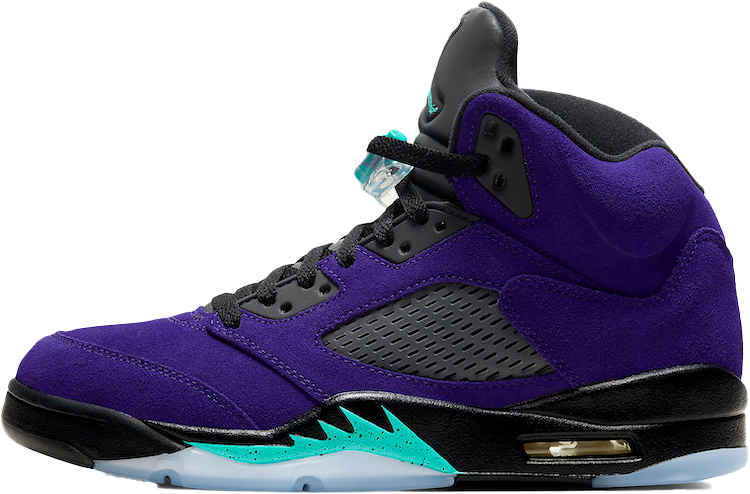

AIR JORDAN 5
DESIGNER TINKER HATFIELD CREATED THE JORDAN 5 WITH INSPIRATION FROM A WORLD WAR II FIGHTER PLANE. LIKE ITS PREDECESSOR, THE AIR JORDAN 4, THIS SHOE FEATURES NET MATERIAL AROUND THE BODY OF THE SHOE. IT IS KNOWN FOR THIS AS WELL AS ITS 3M REFLECTIVE TONGUE AND ITS TRANSLUCENT OUTSOLE (THE FIRST AIR JORDAN TO USE THE TRANSLUCENT OUTSOLE.) THE AIR JORDAN 5 DEBUTED IN 1990 AND HAS SINCE HAD 64 RELEASES, ONE BEING AN ICONIC COLLABORATION WITH OFF-WHITE.
INITIAL RELEASE: 1990
RELEASES: 64
COLORWAY: RETRO ALTERNATE GRAPE
CURRENT RESALE PRICE: $268 (STOCK-X)